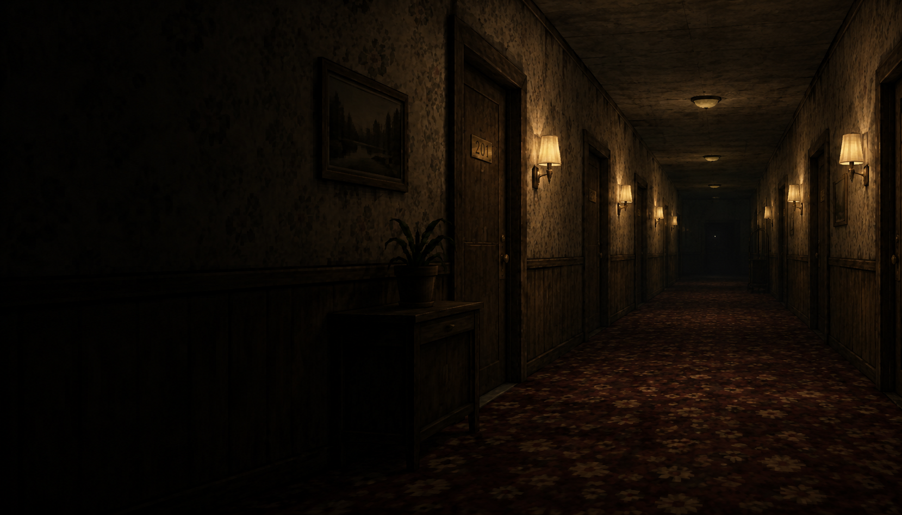
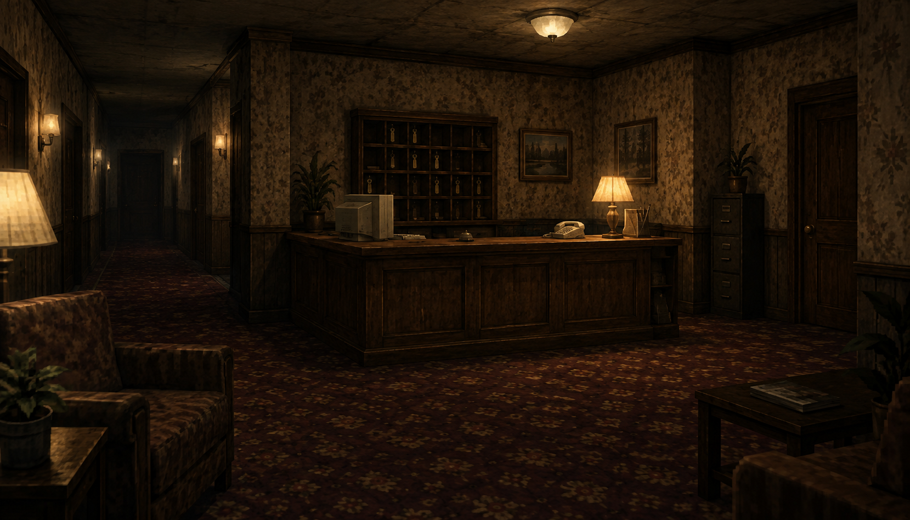

Observa.
Haz tus rondas, revisa las cámaras y presta atención a los pequeños cambios. Lo familiar puede dejar de serlo.

TERROR PSICOLÓGICO · PRIMERA PERSONA
TURNO DE MADRUGADA
Un hotel. Un turno de noche.
Una llamada desde una habitación vacía.
Tu primer turno de vigilancia en un viejo hotel. Revisar las cámaras, recorrer los pasillos y esperar a que amanezca. Nada fuera de lo normal.
Hasta que suena el teléfono. La llamada viene de una habitación que lleva años desocupada.
Al otro lado de esa puerta, el hotel ya no es el mismo.
«Recepción… ¿me escucha?»
00:00 AM / LLEGADA
Tres plantas. Demasiadas puertas. Antes de empezar tu turno, memoriza el camino de vuelta.
El plano es una representación de concepto de la distribución del hotel. También puedes seleccionar las etapas del recorrido con los botones.
Luces cálidas. Pasillos vacíos.
Algo que no estaba ahí antes.

CAM 01 — RECEPCIÓNLas llaves siguen en su sitio. El registro está cerrado. Entonces suena el teléfono.
MÁS ALLÁ DE LAS CÁMARAS
Hay lugares que se quedan contigo.
03 NUEVOS ARCHIVOSEscenas de concepto de 2:47 AM. El aspecto del juego puede cambiar durante el desarrollo.
Terror en primera persona.
La nostalgia de una era. La inquietud de estar solo.
Haz tus rondas, revisa las cámaras y presta atención a los pequeños cambios. Lo familiar puede dejar de serlo.
Sigue las llamadas. Cruza puertas que no recuerdas. Cada habitación guarda un fragmento de una historia que espera ser descubierta.
Pasillos que cambian, pisos que no existen y un sonido de llaves al otro lado. No todo lo que ves te llevará a la salida.
Gráficos de inspiración PS2. Espacios liminales.
El silencio nunca se siente vacío.
EL RELOJ SE DETUVO. TU TURNO NO.
En desarrollo
La noche aún no tiene fecha de llegada.